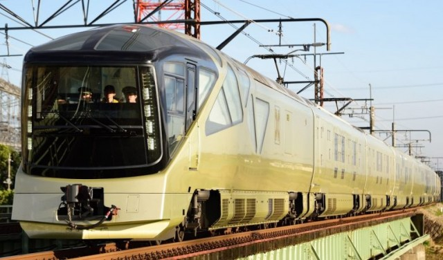
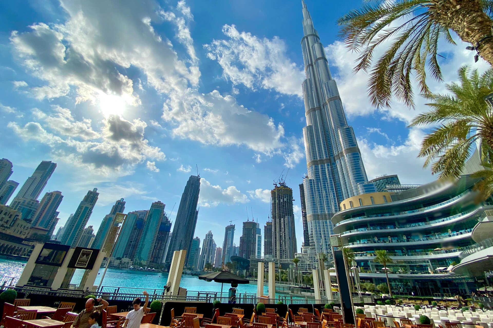

Olaszország júniusban újra megnyílik a turisták előtt oltási útlevéllel
Olaszország, az egyik legnépszerűbb turisztikai célpont a világon, bejelentette, hogy júniusban újra megnyitja kapuit a látogatók előtt. Az ország kormánya jelenleg egy oltási útlevél terven dolgozik, amely lehetővé tenné a turisták számára, hogy karantén nélkül belépjenek, feltéve, hogy teljesen be vannak oltva a COVID-19 ellen, vagy negatív teszt eredményt tudnak felmutatni. Ez nagyszerű hír azoknak az utazóknak, akik álmodoztak arról, hogy meglátogassák Olaszország gyönyörű városait, csodálatos strandjait és világhírű konyháját.

Új japán vonat
Japán új, luxusvonatot indít az ország keleti részén
Japán híres a világ legfejlettebb vasúti rendszeréről, és most egy új luxusvonattal teszik még kényelmesebbé az utazást. Az East Japan Railway Company (JR East) bejelentette, hogy 2023-ban indul a Train Suite Shiki-Shima nevű vonat, amely az ország keleti részén fog közlekedni. A vonatban a legjobb minőségű ételeket és italokat kínálják, és a vendégek a panorámakilátásban is gyönyörködhetnek, mivel a vonat körbejárja a Tōhoku régió nevezetességeit.

Burj Khalifa
Az Egyesült Arab Emírségek megnyitja kapuit az ismételt látogatások előtt a turisták előtt
Az Egyesült Arab Emírségek (EAU) bejelentette, hogy megnyitja kapuit a turisták előtt, akik már egyszer ellátogattak az országba, de visszatérnének. A turistáknak bizonyítaniuk kell, hogy a koronavírus elleni oltási program részeseként legalább egy adagot megkaptak, vagy negatív teszteredményt kell bemutatniuk. Ez jó hír azok számára, akik már szeretnék újra felfedezni az EAU izgalmas városait, kulturális és természeti látnivalóit, valamint luxus szállodáit és bevásárlóközpontjait.